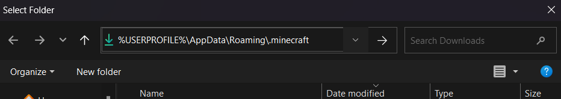

Pack Manager is an easy way to manage your texture packs?

Newest version = V1.4
Click on Find .minecraft folder
If you use the minecraft launcher or a client like Badlion, Lunar or Feather you can use the path below
%USERPROFILE%\AppData\Roaming\.minecraft
Paste in the code and press enter
If you use a client that is made for moding then find its path (The folder above the "resourcepacks")
Under pack list click on Add pack and select you packs
Enter a name and make it
On the pack you want to add to the profile click on the "Add to profile" button and select the profile